19. StellarMate Control Panel
IMPORTANT
In order to open the StellarMate Control Panel you need to be connected to the same network as your StellarMate. If StellarMate is in hotspot mode, you can connect to it by going to your computer/laptop WiFi settings and connecting to the SSID stellarmate with the password stellar@mate Do not open StellarMate Control Panel from StellarMate itself, it is meant to be opened from your computer/laptop.
StellarMate Control Panel is a web application for StellarMate OS. It provides any functions such as displaying the connection status of the controller, backup and restore, network and factory reset, etc.
19.1. Status Bar
The Status Bar is available on every page on the top-right corner as it is informative to the user and has some shortcuts.
{kind=link}
- The Status Bar has the following features:
Shows the connection status
Shortcut to update StellarMate OS build
Shows the type of connection to StellarMate (Hotspot, WIFi or ethernet)
Shows the Date and Time
Allows shutting down or restarting StellarMate
If the connection is spotty and keeps getting disconnected, the status bar will inform you by showing a yellow exclamation icon.
{kind=link}
To update using the status bar, click on the update icon and a dialog will pop-up, allowing you to check for an update and install it.
{kind=link}
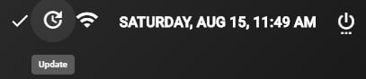
{kind=link}
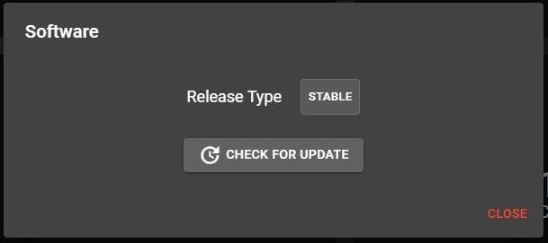
19.2. Dashboard
{kind=link}
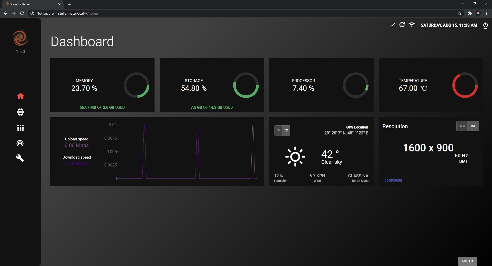
The home page of the StellarMate Control Panel is the Dashboard, which shows the following information:
RAM Usage
Storage Usage
CPU Usage
Device Temperature
Network Graph
Weather and Location Information
Screen Resolution
Weather Units
Weather units can be toggled from Metric to Imperial and vice-versa.
{kind=link}
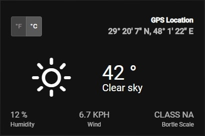
{kind=link}
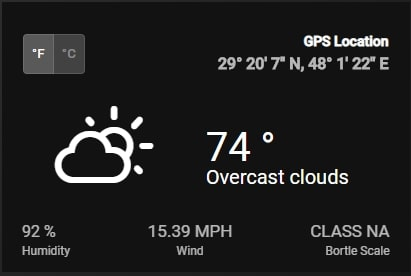
19.3. Hardware
In this page, you can see all the hardware devices that are connected to StellarMate.
{kind=link}
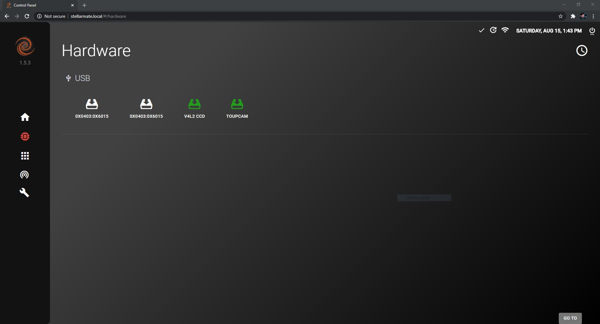
Clicking on a device will show its information, which can be downloaded by clicking on the Download button (cloud icon) on the top-right.
{kind=link}
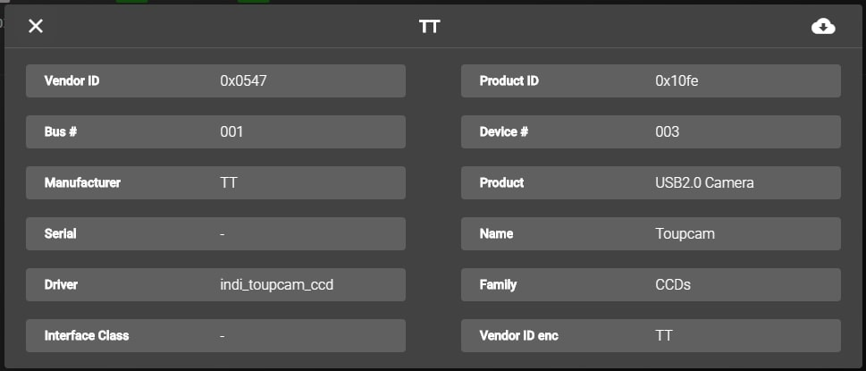
19.4. Software
{kind=link}
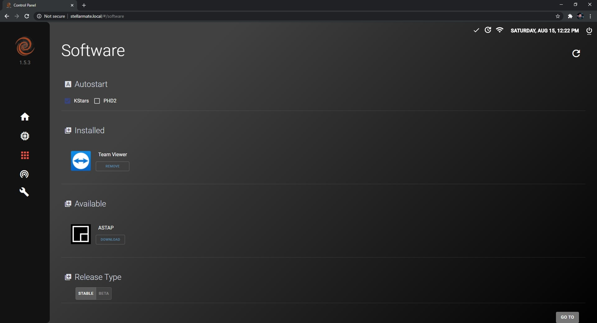
Auto Start In the software center it is possible to toggle Auto Start for KStars and/or PHD2. If toggled on, it allows KStars and/or PHD2 to start-up with StellarMate OS.
Installed Installed applications appear in this section and you can remove/uninstall them by clicking on the remove button.
Available Applications that are available for download appear in this section and you can install them by following these steps:
Click on Download
Wait for download to complete
Click on Install
The application should now be installed on your StellarMate.
Release Type
You can switch between the Stable and Beta releases. The Stable release -as the name suggests- is stable, has the main features of StellarMate OS and does not contain show-stopping bugs. The Beta release is not very stable, and it has drivers and new features such as incomplete drivers for unsupported devices. The new features might’ve not been tested completely and can sometimes be buggy since there might be show-stopping bugs which were not caught by StellarMate developers.
19.5. Network
{kind=link}
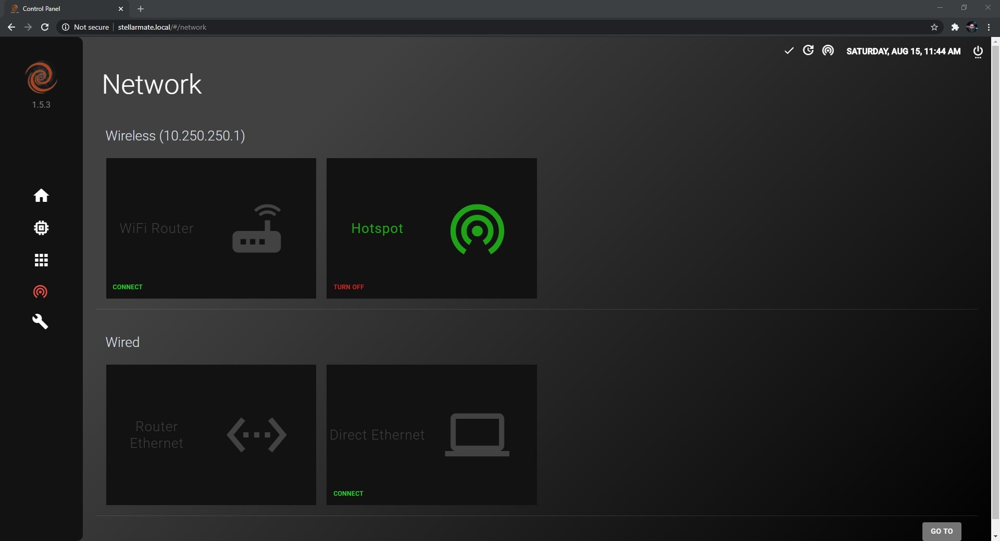
Wireless You can connect to StellarMate through a WiFi Router or the broadcasted HotSpot network.
To connect to StellarMate through a WiFi Router, you have to connect StellarMate to the WiFi Router first by following these steps:
Click on Connect on the WiFi Router card
{kind=link}
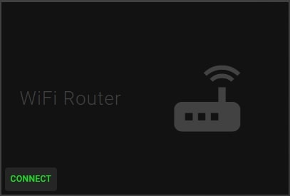
Select your WiFi Router network connection and then put in the password if there is one, then click on Connect.
{kind=link}
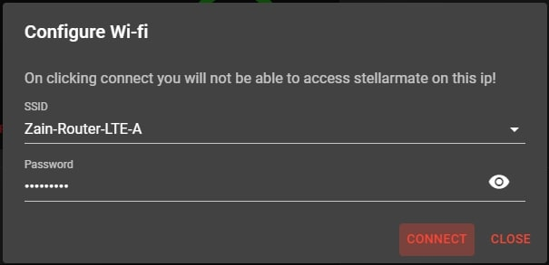
Connect to the same WiFi network on your computer/laptop and then refresh the page, the network page should look like the image below.
{kind=link}
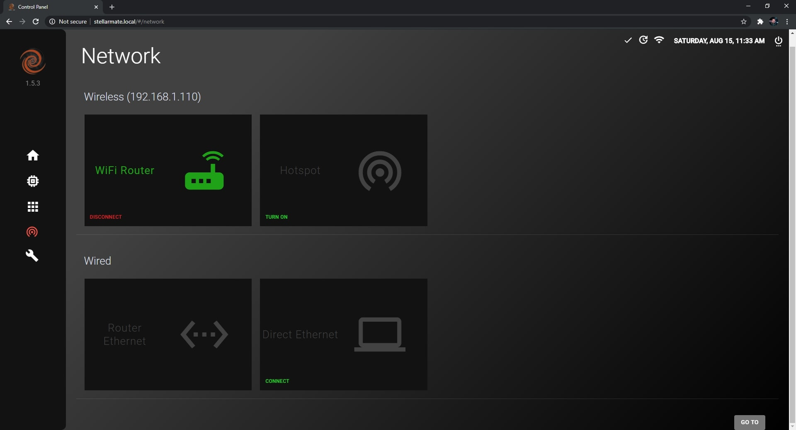
You can always switch back to HotSpot mode whenever you want by clicking on the Turn On button under HotSpot.
Wired
StellarMate can be connected through Router Ethernet or Direct Ethernet
To connect to StellarMate through Router Ethernet, just connected an Ethernet cable to StellarMate and connected the other end to your Router.
Now connect to the same network on your computer and refresh the page.
To connect to StellarMate through Direct Ethernet, follow the video tutorial on this page.
19.6. Diagnostics
{kind=link}
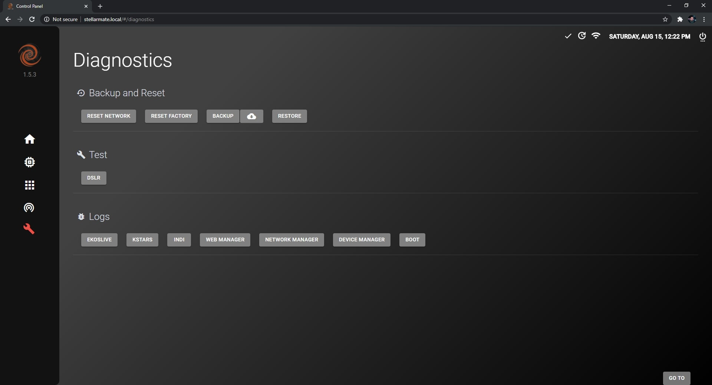
The Diagnostics page contains Backup and Reset functions as well as many important information to help StellarMate developers fix any issues that StellarMate users face.
Backup and Reset This section provides the user with the ability to:
Reset Network: In case you face any persistent problems with the network settings, you can reset all network settings to default by clicking on the Network Reset button. Any WiFi networks or manual network settings will now be discarded. StellarMate must be restart for this change to take effect. Reset Factory: In case StellarMate is experiencing unresolved instablities, it is possible to restore it to Factory Settings by click on the the Factory Reset button. After the confirmation dialog, you need to enter StellarMate password (default: smate). The controller name is reset to stellarmate. It must be restarted afterwards. Backup: StellarMate settings can be backed up to a file to help in restoring any settings when either flashing a new StellarMate OS or in case in restoration of damaged SD card. The settings include all KStars and INDI settings which includes the profiles and driver-specific options. This creates a backup compressed file that can be used later to restore your StellarMate configuration. Restore: StellarMate settings can be restored through a backup file generated by the backup function.
Test Test your hardware devices such as DSLR. This will tell you if your DSLR is working correctly with StellarMate or not.
Logs
In order to check the logs, you can:
Extract logs for diagnosing an error or an issue that has happened during usage of StellarMate.
This can be used by StellarMate developers to help fix the issue. StellarMate support may ask you to attach logs in your support ticket if they need to investigate the issue.
19.6.1. Backup and Restore Process
This is an instructional guide for the Backup and Restore process. It will be explained step by step in this section of the manual.
Backing up StellarMate configuration In order to backup your StellarMate configuration, please follow these steps:
Click on the Backup button.
{kind=link}
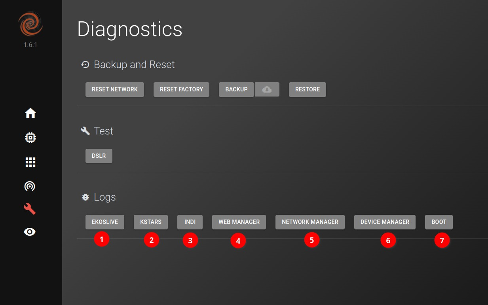
Wait for the Backup process to generate a backup file, this might take long if you have lots of images.
{kind=link}
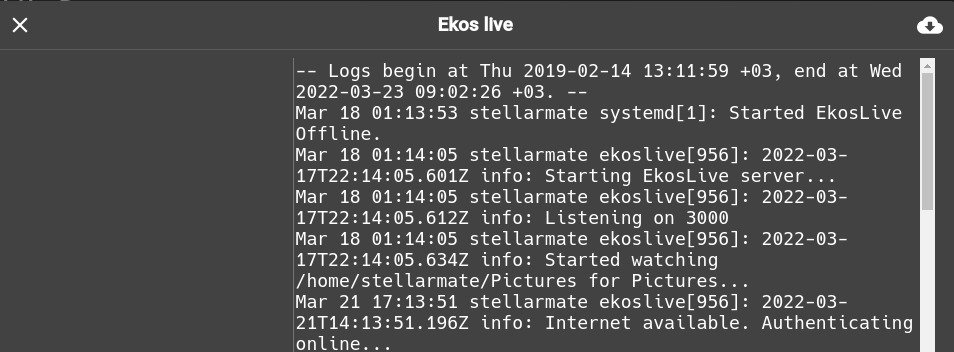
Click on the Download button (cloud icon) and select the backup file that has been generated.
{kind=link}
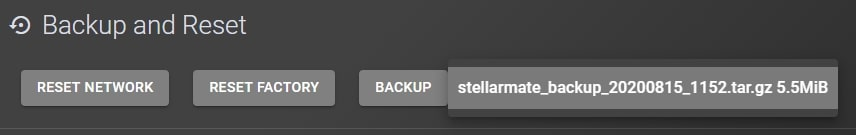
You should get a Backup Successful message. You should You now have a backup file on your computer that you can use later to restore your StellarMate configuration.
{kind=link}
Restoring StellarMate configuration In order to restore your StellarMate configuration, please follow these steps:
Click on the Restore button.
{kind=link}
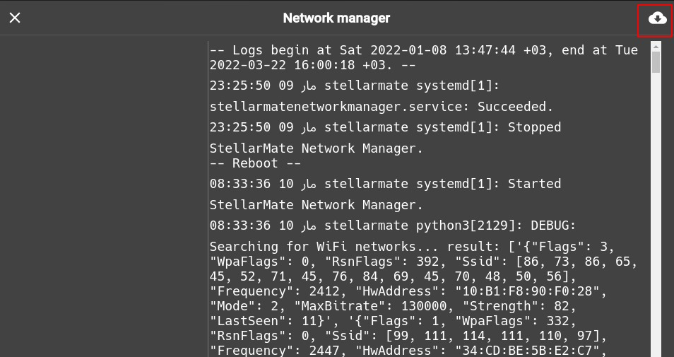
Select your backup file and click on Open.
{kind=link}
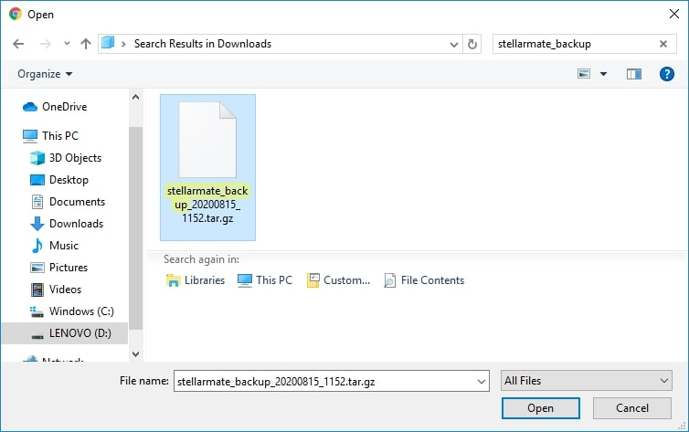
Wait for the upload process to complete.
You should get a Upload Successful message, which means that the restore was successful.
{kind=link}
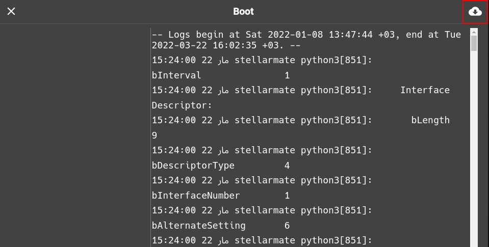
19.6.2. Logs
EkosLive logs should be sent to the Stellar Mate support when there are issues about EkosLive being down or for issues with Live Stacking. This is an instructional guide for how to View or Extract Logs. It will be explained step by step in this section of the manual.
Logs can be viewed and also download from the Icon on top-right side.
EkosLive
KStars & INDI
You can view the logs for kstars and INDI as well. On the left side, you can see different files for each day
Note: You can also watch the Video on how to enable logging in Kstars from the link given below:
https://www.indilib.org/individuals/logs-howto.html
Web Manager
{kind=link}
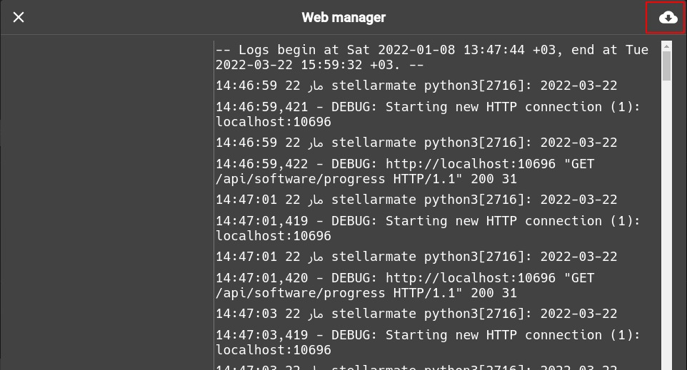
Network Manager
Device Manager
Boot